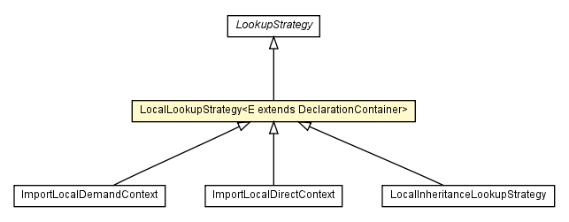

chameleon.core.lookup
Class LocalLookupStrategy<E extends DeclarationContainer>

java.lang.Object
 chameleon.core.lookup.LookupStrategy
chameleon.core.lookup.LocalLookupStrategy<E>
chameleon.core.lookup.LookupStrategy
chameleon.core.lookup.LocalLookupStrategy<E>
- Direct Known Subclasses:
- NamespacePart.ImportLocalDemandContext, NamespacePart.ImportLocalDirectContext, Type.LocalInheritanceLookupStrategy
public class LocalLookupStrategy<E extends DeclarationContainer>
- extends LookupStrategy
| Methods inherited from class java.lang.Object |
clone, equals, finalize, getClass, hashCode, notify, notifyAll, toString, wait, wait, wait |
_element
private E extends DeclarationContainer _element
LocalLookupStrategy
public LocalLookupStrategy(E element)
element
public E element()
- Return the element referenced by this collector
- Returns:
declarations
protected <D extends Declaration> List<D> declarations(DeclarationSelector<D> selector)
throws LookupException
- Return those declarations of this declaration container that are selected
by the given declaration selector. The default implementation delegates the work
to element().declarations(selector).
- Type Parameters:
D - The type of the arguments selected by the given signature selector. This type
shoud be inferred automatically.- Parameters:
selector -
- Returns:
-
- Throws:
LookupException
lookUp
public <D extends Declaration> D lookUp(DeclarationSelector<D> selector)
throws LookupException
- Specified by:
lookUp in class LookupStrategy
- Throws:
LookupException